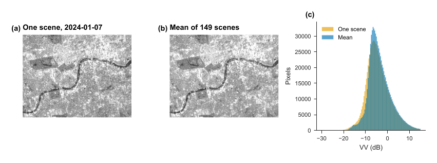
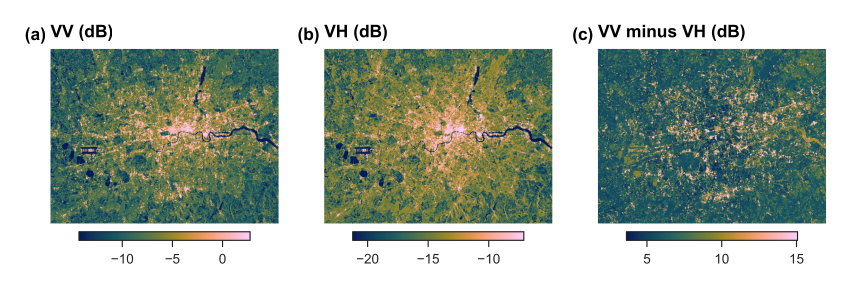
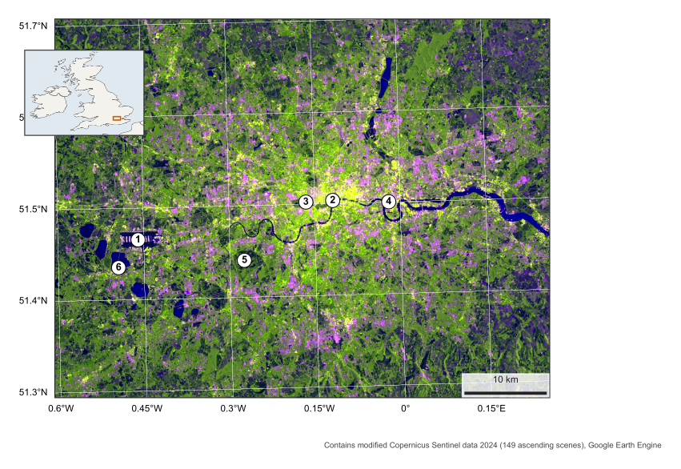
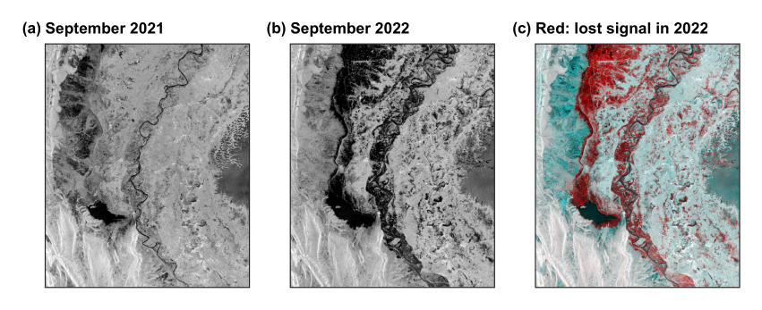
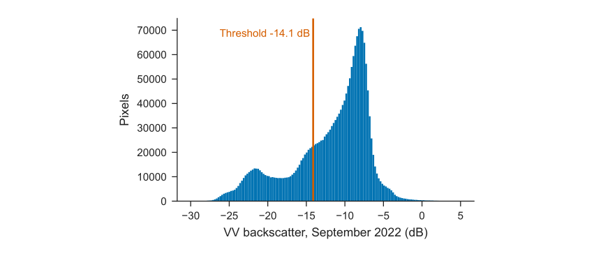
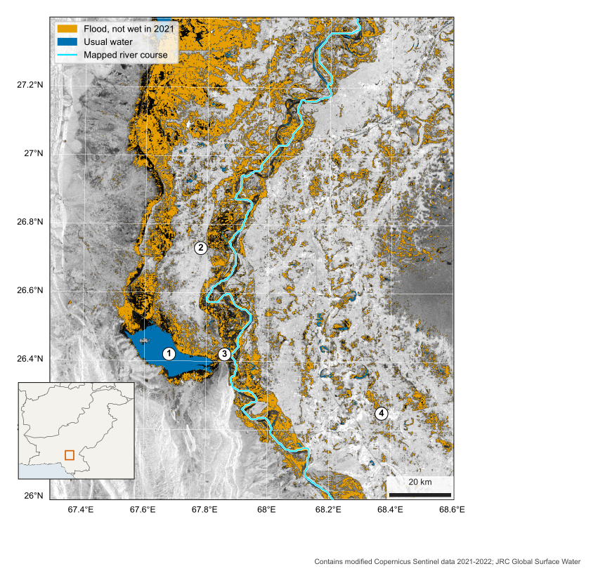

1. The science behind the images¶
1.1 Why radar sees what it sees¶
A radar sends a pulse and times its return. Distance comes from time, as \(R = ct/2\), where \(c\) is the speed of light and the 2 accounts for the trip out and back. Sentinel-1 uses C band: a frequency of 5.405 GHz, which is a wavelength of \(\lambda = c/f \approx 5.5\) cm. Features much smaller than this look smooth to the radar, which is why calm water and tarmac act like mirrors.
The sensor looks sideways, not straight down. If it looked straight down, two points at equal distance either side would return together and could not be told apart. Looking sideways at about 29 to 46 degrees in this mode solves that, and also causes the distortions described below.
1.2 What backscatter is¶
The radar equation says how much power returns:
Here \(P_t\) is power sent, \(G\) antenna gain, \(R\) range and \(\sigma\) the radar cross-section of the target. Everything but \(\sigma\) is known about the instrument and geometry, so it can be removed by calibration. For a surface, \(\sigma\) is divided by the ground area to give \(\sigma^0\) (sigma nought), a dimensionless ratio that can be compared between places and dates.
1.3 What a decibel is¶
Backscatter spans many orders of magnitude, from about 0.001 for calm water to above 10 for a building’s corner. A logarithmic scale fits this on a readable range:
Decibels are ratios, so a difference in dB is a ratio in power. A change from \(-10\) to \(-13\) dB means half the power returned, wherever it happens on the scale. Negative values are normal and do not mean negative energy: they mean less than the reference.
Why averaging in dB is wrong.¶
Take two pixels at \(-30\) and \(0\) dB. Their mean in dB is \(-15\) dB. In linear units, the mean of 0.001 and 1 is 0.5005, which is \(-3\) dB. The dB mean is lower by 12 dB, a factor of about 16 in power, because a logarithm gives the dim pixel too much weight. So we average in linear power, as mean_db() does in Chapter 2. Over a year of London scenes this matters most at strong targets, whose returns vary.
1.4 Polarisation: what VV and VH tell us¶
The radar’s wave oscillates in one plane. Sentinel-1 sends vertically (V) and receives both V and horizontal (H). Each surface changes this differently:
| Mechanism | What happens and where |
|---|---|
| Surface scattering | Rough ground reflects some energy back, mostly keeping polarisation, so VV is above VH |
| Volume scattering | Repeated scattering among leaves and branches scrambles polarisation, so VH rises |
| Double bounce | Ground and wall form a corner that returns energy strongly, so VV is very high, as in cities and flooded forest |
| Specular reflection | A smooth surface reflects energy away, so both are low, as on calm water |
The ratio VV minus VH (in dB, which is a ratio in linear terms) separates these partly, which is why it serves as the third band in our colour image.
1.5 Speckle¶
What it is.¶
A pixel holds many scatterers. Their returns add as waves with random phases, sometimes reinforcing and sometimes cancelling. So uniform ground looks grainy, even with a perfect instrument. Viewed the same way, the same ground gives the same grain, which makes it a form of interference and not random instrument noise.
The model.¶
Speckle is multiplicative: observed intensity \(I\) is the true backscatter \(\sigma^0\) times a random factor \(n\) with mean 1:
Multiplicative means brighter areas have larger swings in linear units, and a logarithm turns these into a roughly constant spread. \(L\) is the number of looks, or independent samples averaged. It can be estimated from a uniform area as the equivalent number of looks:
Measured here.¶
Over the most uniform 300 m patch near central London, ENL is 4.4 in one scene and 20.9 in the mean of 149 scenes. The increase is less than 149-fold, because the patch is not perfectly uniform and because real changes through the year remain. This also suggests a limit: averaging removes speckle at the cost of time detail, and filters such as Lee or Refined Lee remove it at the cost of spatial detail.
1.6 What has been done to the data¶
The Earth Engine collection COPERNICUS/S1_GRD holds Ground Range Detected scenes, already processed as follows:
-
Orbit file: precise position of the satellite.
-
GRD border noise removal: low-value strips at scene edges.
-
Thermal noise removal: the instrument’s own noise.
-
Radiometric calibration: digital numbers to \(\sigma^0\).
-
Terrain correction: moved to map position with a digital elevation model.
-
Conversion to dB.
It has not had speckle filtering or radiometric terrain flattening, so slopes facing the satellite stay bright. “Detected” also means phase has been discarded, so these scenes cannot be used for interferometry, and subsidence needs a different product.
1.7 Three distortions of mountains¶
Because radar measures distance, tall things shift towards the sensor:
-
Foreshortening: slopes facing the radar look compressed and bright.
-
Layover: the top of a steep slope or tower returns before its base, and appears displaced towards the sensor.
-
Shadow: slopes facing away receive no signal and look black.
You can see the first of these in the hills in the lower left of the Sindh map, and the second in London’s towers. In both cases brightness reflects geometry, not material.
1.8 Reading rules¶
-
Dark usually means smooth, or facing away. It does not always mean water.
-
Bright usually means rough, wet, or a corner. It does not always mean buildings.
-
Compare like with like: the same pass direction and season.
-
Average in linear power, and report in dB.
-
Trust change between dates more than a single absolute value.
2. How to read a radar image: London¶
2.1 What the satellite measures¶
Sentinel-1 sends microwave pulses at a wavelength of about 5.5 cm and records what returns. It supplies its own signal, so it works at night and sees through cloud. The picture therefore shows how surfaces send energy back, which is different from colour. Three things control the return: how rough a surface is at the scale of the wavelength, its geometry, and how wet it is.
| Surface | Why it looks as it does |
|---|---|
| Calm water | A smooth mirror reflects the pulse away, so it looks dark |
| Vegetation | Leaves and branches scatter in many directions, so it looks moderate, with strong VH |
| Buildings | Walls and ground form corners that send the pulse straight back, so they look very bright |
2.2 The numbers¶
The image holds backscatter, \(\sigma^0\), usually in decibels:
So 10 dB more is ten times the power, and 3 dB is about double. Polarisation is written as sent and received: VV goes out and returns vertically, whereas VH goes out vertically and returns horizontally. Volume scattering in vegetation changes polarisation, so VH responds strongly to it.
2.3 Step 1: choose the scenes¶
We take all ascending Interferometric Wide scenes over London in 2024: 149 of them. Keeping one pass direction matters, because a building looks different from each side. From the code: src/sarlib.py, s1(), lines 17--23
def s1(region, start, end, orbit=None):
"""Sentinel-1 ground range scenes in dual polarisation; values are already calibrated backscatter in dB."""
c = (ee.ImageCollection("COPERNICUS/S1_GRD").filterBounds(region).filterDate(start, end)
.filter(ee.Filter.eq("instrumentMode", "IW"))
.filter(ee.Filter.listContains("transmitterReceiverPolarisation", "VV"))
.filter(ee.Filter.listContains("transmitterReceiverPolarisation", "VH")))
return c.filter(ee.Filter.eq("orbitProperties_pass", orbit)) if orbit else c
2.4 Step 2: average in the right units¶
Decibels are logarithms, so averaging them understates bright targets. We convert to linear power, average, and convert back: From the code: src/sarlib.py, mean_db(), lines 30--32
def mean_db(collection, band):
"""Average in linear power and return to dB, because averaging decibels understates bright targets."""
return collection.select(band).map(to_linear).mean().log10().multiply(10).rename(band)
2.5 Step 3: see why averaging is needed¶
Radar images have a grain called speckle, which arises when returns from many small scatterers within a pixel interfere. It is not noise in the usual sense, since it would repeat exactly from an identical view, but it hides detail. Over the most uniform 300 m patch in this view, chosen by the code, the spread of VV falls from 2.05 dB in one scene (2024-01-07) to 0.78 dB in the mean of the year (Figure 2.1).

\Figure 2.1. Central London: one scene (a), the mean of the year (b), and the distribution of values (c).
2.6 Step 4: build a false-colour image¶
No single band shows everything (Figure 2.2), so we put three in the display channels: VV as red, VH as green, and VV minus VH as blue.

\Figure 2.2. The three bands, each stretched between its 2nd and 98th percentiles.
2.7 Reading the map¶

\Figure 2.3. London in radar, 2024. VV as red, VH as green, VV minus VH as blue. Numbers are explained in Table 2.1. British National Grid.
| Place | VV (dB) | VH (dB) | VV minus VH |
|---|---|---|---|
| Heathrow Airport | 5.7 | -0.7 | 6.4 |
| River Thames, central London | -14.8 | -20.5 | 5.8 |
| Hyde Park | -8.1 | -14.2 | 6.2 |
| Canary Wharf | 8.8 | 1.9 | 6.9 |
| Richmond Park | -12.8 | -19.1 | 6.3 |
| Reservoir south-west of Heathrow | -17.8 | -26.7 | 8.9 |
: Table 2.1. Measured values, averaged over a small circle at each numbered place in Figure 2.3.
Look at the map in this order:
-
Water (2, 6). The Thames and the reservoirs are the darkest features. The river’s width changes on the map partly because a narrow channel can be mixed in one pixel with its bright banks and bridges.
-
The dense centre (4). Canary Wharf is extremely bright, because towers form strong corners. Its value is one of the highest in the table.
-
Green space (3, 5). Hyde Park and Richmond Park stand out as dark green holes in the city. Both polarisations are low, since grass is fairly smooth at this wavelength.
-
Airport (1). Heathrow’s runways are dark stripes, smooth like water, surrounded by bright buildings.
A caution: the mean at a marked place depends on exactly where the circle falls, and at the river it can include bridge and bank returns.
3. Mapping a flood: Sindh, 2022¶
3.1 The question¶
In 2022 severe floods covered large parts of Pakistan. Cloud often blocks optical satellites during such events, while radar keeps seeing. Open floodwater is smooth, so it turns dark. We therefore look for land that was not dark in a normal year and turned dark during the flood. The area here runs from Manchar Lake along the Indus.
3.2 Step 1: a before and an after¶
We take the mean VV over the same weeks of two years, 25 August to 15 September in 2021 (12 scenes) and 2022 (12 scenes), so the season is alike. VV is the usual choice for open water, because it separates smooth water well from rougher land.

\Figure 3.1. September 2021 (a), September 2022 (b), and a colour combination (c) in which a surface that lost signal in 2022 appears red. UTM 42N.
3.3 Step 2: choose a threshold from the data¶
Water and land form two groups in the histogram, so we need the value that best separates them. Otsu’s method tries every value \(t\), and keeps the one that maximises the variance between the two groups:
where \(w\) is the share of pixels in each group and \(\mu\) its mean. Here it gives -14.1 dB (Figure 3.2). From the code: src/sarlib.py, otsu(), lines 61--69
def otsu(values, bins=256):
"""The threshold that best separates two groups: it maximises the variance between them (Otsu, 1979)."""
v = values[np.isfinite(values)]
count, edges = np.histogram(v, bins=bins)
mids = (edges[:-1] + edges[1:]) / 2
w = np.cumsum(count).astype(float)
m = np.cumsum(count * mids)
between = (m[-1] * w / w[-1] - m) ** 2 / (w * (w[-1] - w) + 1e-9) * w[-1]
return float(mids[np.argmax(between)])

\Figure 3.2. Backscatter in 2022, with the threshold.
3.4 Step 3: separate flood from usual water¶
Three rules define flood: below the threshold in 2022, above it in 2021, and water less than 50% of the time in the JRC Global Surface Water record. From the code: src/02_sindh_flood.py, lines 25--28
thr = otsu(after)
wet_after, wet_before = after < thr, before < thr
flood = wet_after & ~wet_before & (occ < 50)
permanent = wet_after & (occ >= 50)
3.5 Reading the map¶

\Figure 3.3. Water in Sindh, September 2022, over VV backscatter. 1 Manchar Lake, 2 Dadu, 3 Sehwan, 4 Nawabshah. UTM 42N.
| What to look for | How to read it |
|---|---|
| Around Manchar Lake (1) | The usual lake is blue. The orange beyond it is new water spread along the foot of the western hills |
| Along the Indus | A wide orange band follows the river, with the usual channel in blue within it |
| Round Dadu (2) | Bright, higher ground stands out between flooded land, so settlement is a visible island |
| Round Sehwan (3) | Hills pinch the valley here, and the flood narrows |
| West, lower left | Bright ridges facing the satellite are the hills. They are terrain, not buildings |
3.6 Results¶
The map shows about 3,458 km\(^2\) of flood within the 20,415 km\(^2\) scene, and 348 km\(^2\) of usual water. Moving the threshold by 2 dB either way gives 3,145 and 3,345 km\(^2\), so the choice matters less than the limits below.
3.7 What this cannot tell you¶
-
Not validated. This is a teaching estimate, and it has not been compared with optical images or field reports.
-
Rice and wet soil. Flooded fields and irrigated land in September can look like flood. This is likely in scattered patches, especially in the east.
-
Hidden water. Water beneath trees or crops, or among buildings, may be missed because those surfaces stay bright.
-
Three weeks in one image. A mean covers several passes, so it shows water present for much of the period, and not one moment.
-
Black areas. Dark in both years, these may be standing water or smooth sand. They are not counted as flood.